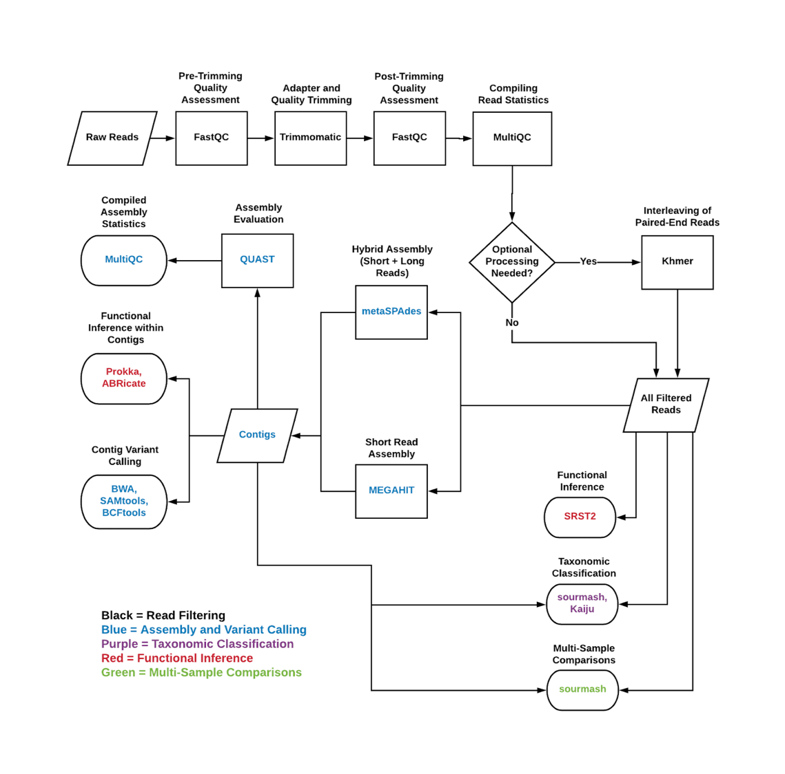

Running Workflows¶
A flowchart illustrating how each workflow component fits together with tools into the overall process is included below:

Dahak workflows are run from the command line using Snakemake, a Python package that provides similar capabilities to GNU make. Each workflow consists of a set of Snakemake rules.
Snakemake is a Python program that assembles and runs tasks using a task graph approach. See Installing for instructions on how to install it.
Dahak workflows benefit directly from Snakemake's rich feature set and capabilities. There is an extensive documentation page on executing Snakemake, and its command line options. There are other projects demonstrating ways of creating snakemake-profiles, or platform-specific configuration profiles.
How To Run Workflows¶
Generally, Snakemake is called by passing command line flags and the name of a target file or rule name:
$ snakemake [FLAGS] <target>
What targets are available?¶
Targets for each workflow are listed on the respective "Snakemake Rules" page for that workflow (see left side navigation menu).
There are two types of targets defined:
Target Files: The user can ask Snakemake to generate a paritcular file, and Snakemake will dynamically determine the rules that are required to generate the requested file. Snakemake uses a dependency graph to determine what rules to run to generate the file.
Build Rules: There are rules that do not themselves do anything but that trigger all of the rules in a given workflow. (The build rules work by assembling filenames and passing target filenames to Snakemake.)
What targets should I use?¶
Users should use the build rules to trigger workflows.
The build rules require workflow configuration details to be set using snakemake's configuration dictionary. See
Each workflow has a set of "build rules" that will trigger rules for a given workflow or portion of a workflow. Available build rules for each workflow are listed on the respective "Snakemake Rules" page for that workflow (see left side navigation menu).
The build rules require some information about which read files to run the workflow on; the information required is covered on each "Snakemake Rules" page.
The Quick Start covers some examples.
How do I specify workflow parameters?¶
Workflow parameters are specified by passing a JSON configuration file to Snakemake.
The default workflow parameter values are set in default_workflowparams.settings.
Any of these values can be overridden using a custom JSON file, as described
above and on the Workflow Configuration page.
For example, to override the default version of trimmomatic (0.36) and use 0.38
instead, the following JSON would override the version to 0.38--5:
{
"biocontainers" : {
"trimmomatic" : {
"use_local" : false,
"quayurl" : "quay.io/biocontainers/trimmomatic",
"version" : "0.38--5"
}
}
}
This can be placed in a JSON file like config/custom_trimmomatic.json (in
the workflows/ directory) and passed to Snakemake using the --config flag like:
$ snakemake --config=config/custom_trimmomatic.json \
[FLAGS] <target>
How do I use Snakemake with Singularity?¶
Singularity is a containerization technology similar to Docker but without the
need for root access. Snakefiles in Dahak contain singularity: directives,
which specify a Singularity image to pull and use to run the given commands.
These directives are ignored by default, Snakemake must be run with the
--use-singularity flag to run each command through a singularity container:
snakemake --use-singularity <target>
When Singularity containers are run, a host directory can be bind-mounted inside the container to provide a shared-access folder on the host filesystem.
To specify a directory for Singularity to bind-mount, use the
SINGULARITY_BINDPATH environment variable:
$ SINGULARITY_BINDPATH="my_data:/data" snakemake --use-singularity <target>
This bind-mounts the directory my_data/ into the Singularity container at /data/.
Where will data files live?¶
To set the scratch/working directory for the Snakemake workflows,
in which all intermediate and final data files will be placed,
set the data_dir key in the Snakemake configuration dictionary.
If this option is not set, it will be data by default.
(No trailing slash is needed when specifying the directory name.)
Singularity Bind Path
If you use a custom directory by setting the data_dir key,
you must also adjust the SINGULARITY_BINDPATH variable
accordingly.
For example, to put all intermediate files into the work/ directory
instead of the data/ directory, the following very short JSON file
could be used for the Snakemake configuration dictionary (this would
use default values for everything except data_dir):
{
"data_dir" : "work"
}
This JSON file can be used as the Snakemake configuration dictionary
by passing the JSON file name to the --configfile flag to Snakemake
and updating the Singularity environment variable:
$ SINGULARITY_BINDPATH="work:/work" \
snakemake --configfile=config/custom_scratch.settings \
[FLAGS] <target>
How do I customize my workflow with custom configuration files?¶
See the Snakemake Configuration page.
Summary¶
All together, the command to run a Dahak workflow will look like this:
$ SINGULARITY_BINDPATH="data:/data" snakemake \
--configfile my_workflow_params.json \
--use-singularity \
<snakemake-target>